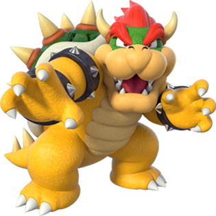
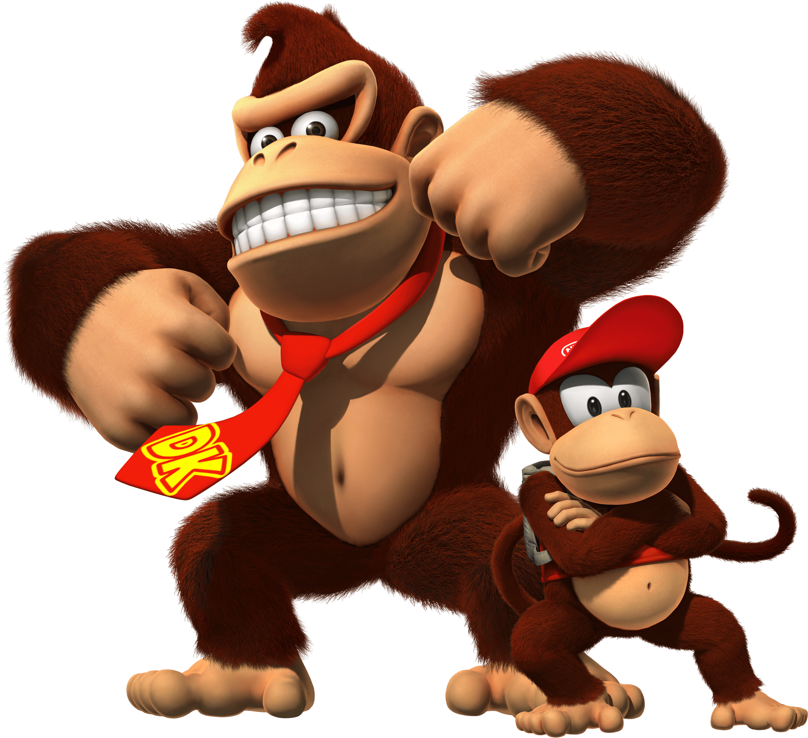

Mario é retratado como um encanador italiano baixinho rechonchudo e bigodudo vindo do Brooklyn que reside no Reino dos Cogumelos. Ele repetidamente tem a missão de resgatar a Princesa Peach do vilão Bowser, e impedir seus diversos planos de destruir e dominar o reino. Mario também tem outros inimigos ou rivais, incluindo Donkey Kong e Wario. Desde 1995, Mario é dublado por Charles Martinet.
e a princesa do Reino dos Cogumelos. A Peach apareceu pela primeira vez no jogo Super Mario Bros., sendo criada pelo Shigeru Miyamoto para ser a donzela em perigo no jogo e isso se continuou depois disso. Ela reside em seu castelo junto de vários Toads, que agem como seus leais súditos. Seu reino é frequentemente atacado pela Tropa Koopa, uma tropa liderada pelo Bowser. Ela é o interesse amoroso do super Mario.

Ele é o rei de todos os Koopas (uma espécie similar a tartarugas super desenvolvidas) e também o líder da organização criminosa conhecida como Koopa Troop, uma organização composta por diversas criaturas do Reino dos Koopas.
é retratado como um cidadão do Reino do Cogumelo e é um dos atendentes mais leais da Princesa Peach , trabalhando constantemente em seu nome. Toad geralmente é visto como um personagem não-jogador que fornece assistência a Mario e seus amigos na maioria dos jogos, mas há momentos em que Toad ocupa o centro do palco e aparece como umprotagonista , como visto em Super Mario Bros. 2 , Wario's Woods e Super Mario 3D World .

Luigi é irmão do Mario e é um dos mascotes da série, ele é o seu companheiro em vários jogos. A primeira aparição de Luigi se deu no jogo Mario Bros. em 1983, como personagem controlado pelo segundo jogador Ele manteve esse papel em Super Mario Bros., Super Mario Bros. 3, Super Mario World e outros títulos. O primeiro jogo em que estrelou como personagem primário foi Super Mario Bros. 2. Luigi protagonizou o jogo educativo Mario is Missing!, e mais tarde repetiu o papel em Luigi's Mansion, jogo lançado para o Gamecube em 2001. Nos dois jogos, é colocado no papel de herói porque Mario, o protagonista normal da franquia, precisa ser salvo.
Donkey Kong, no qual enfrentou Jumpman (Mario) que posteriormente viria a estrelar o primeiro título de sua franquia nos consoles da empresa, Super Mario Bros. Em 1994, a série foi revivida no jogo de plataforma Donkey Kong Country, com Donkey Kong e o seu grupo de outros macacos como protagonistas no cenário da selva de Donkey Kong Island contra uma variedade de inimigos antropomórficos, os Kremlings, uma clã de crocodilos liderada pelo King K. Rool.
